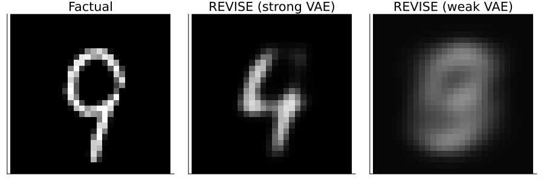

1 High-Fidelity Counterfactual Explanations through Conformal Prediction
Research Proposal
We propose Conformal Counterfactual Explanations: an effortless and rigorous way to produce realistic and faithful Counterfactual Explanations using Conformal Prediction. To address the need for realistic counterfactuals, existing work has primarily relied on separate generative models to learn the data-generating process. While this is an effective way to produce plausible and model-agnostic counterfactual explanations, it not only introduces a significant engineering overhead but also reallocates the task of creating realistic model explanations from the model itself to the generative model. Recent work has shown that there is no need for any of this when working with probabilistic models that explicitly quantify their own uncertainty. Unfortunately, most models used in practice still do not fulfil that basic requirement, in which case we would like to have a way to quantify predictive uncertainty in a post-hoc fashion.
1.1 Motivation
Counterfactual Explanations are a powerful, flexible and intuitive way to not only explain black-box models but also enable affected individuals to challenge them through the means of Algorithmic Recourse.
1.1.1 Counterfactual Explanations or Adversarial Examples?
Most state-of-the-art approaches to generating Counterfactual Explanations (CE) rely on gradient descent in the feature space. The key idea is to perturb inputs \(x\in\mathcal{X}\) into a black-box model \(f: \mathcal{X} \mapsto \mathcal{Y}\) in order to change the model output \(f(x)\) to some pre-specified target value \(t\in\mathcal{Y}\). Formally, this boils down to defining some loss function \(\ell(f(x),t)\) and taking gradient steps in the minimizing direction. The so-generated counterfactuals are considered valid as soon as the predicted label matches the target label. A stripped-down counterfactual explanation is therefore little different from an adversarial example. In Figure 1.1, for example, generic counterfactual search as in Wachter, Mittelstadt, and Russell (2017) has been applied to MNIST data.

The crucial difference between adversarial examples and counterfactuals is one of intent. While adversarial examples are typically intended to go unnoticed, counterfactuals in the context of Explainable AI are generally sought to be “plausible”, “realistic” or “feasible”. To fulfil this latter goal, researchers have come up with a myriad of ways. Joshi et al. (2019) were among the first to suggest that instead of searching counterfactuals in the feature space, we can instead traverse a latent embedding learned by a surrogate generative model. Similarly, Poyiadzi et al. (2020) use density … Finally, Karimi, Schölkopf, and Valera (2021) argues that counterfactuals should comply with the causal model that generates them [CHECK IF WE CAN PHASE THIS LIKE THIS]. Other related approaches include … All of these different approaches have a common goal: they aim to ensure that the generated counterfactuals comply with the (learned) data-generating process (DGB).
Definition 1.1 (Plausible Counterfactuals) Formally, if \(x \sim \mathcal{X}\) and for the corresponding counterfactual we have \(x^{\prime}\sim\mathcal{X}^{\prime}\), then for \(x^{\prime}\) to be considered a plausible counterfactual, we need: \(\mathcal{X} \approxeq \mathcal{X}^{\prime}\).
In the context of Algorithmic Recourse, it makes sense to strive for plausible counterfactuals, since anything else would essentially require individuals to move to out-of-distribution states. But it is worth noting that our ambition to meet this goal, may have implications on our ability to faithfully explain the behaviour of the underlying black-box model (arguably our principal goal). By essentially decoupling the task of learning plausible representations of the data from the model itself, we open ourselves up to vulnerabilities. Using a separate generative model to learn \(\mathcal{X}\), for example, has very serious implications for the generated counterfactuals. Figure 1.2 compares the results of applying REVISE (Joshi et al. 2019) to MNIST data using two different Variational Auto-Encoders: while the counterfactual generated using an expressive (strong) VAE is compelling, the result relying on a less expressive (weak) VAE is not even valid. In this latter case, the decoder step of the VAE fails to yield values in \(\mathcal{X}\) and hence the counterfactual search in the learned latent space is doomed.

Here it would be nice to have another example where we poison the data going into the generative model to hide biases present in the data (e.g. Boston housing).
- Latent can be manipulated:
- train biased model
- train VAE with biased variable removed/attacked (use Boston housing dataset)
- hypothesis: will generate bias-free explanations
1.1.2 From Plausible to High-Fidelity Counterfactuals
In light of the findings, we propose to generally avoid using surrogate models to learn \(\mathcal{X}\) in the context of Counterfactual Explanations.
Proposition 1.1 (Avoid Surrogates) Since we are in the business of explaining a black-box model, the task of learning realistic representations of the data should not be reallocated from the model itself to some surrogate model.
In cases where the use of surrogate models cannot be avoided, we propose to weigh the plausibility of counterfactuals against their fidelity to the black-box model. In the context of Explainable AI, fidelity is defined as describing how an explanation approximates the prediction of the black-box model (Molnar 2020). Fidelity has become the default metric for evaluating Local Model-Agnostic Models, since they often involve local surrogate models whose predictions need not always match those of the black-box model.
In the case of Counterfactual Explanations, the concept of fidelity has so far been ignored. This is not altogether surprising, since by construction and design, Counterfactual Explanations work with the predictions of the black-box model directly: as stated above, a counterfactual \(x^{\prime}\) is considered valid if and only if \(f(x^{\prime})=t\), where \(t\) denote some target outcome.
Does fidelity even make sense in the context of CE, and if so, how can we define it? In light of the examples in the previous section, we think it is urgent to introduce a notion of fidelity in this context, that relates to the distributional properties of the generated counterfactuals. In particular, we propose that a high-fidelity counterfactual \(x^{\prime}\) complies with the class-conditional distribution \(\mathcal{X}_{\theta} = p_{\theta}(X|y)\) where \(\theta\) denote the black-box model parameters.
Definition 1.2 (High-Fidelity Counterfactuals) Let \(\mathcal{X}_{\theta}|y = p_{\theta}(X|y)\) denote the class-conditional distribution of \(X\) defined by \(\theta\). Then for \(x^{\prime}\) to be considered a high-fidelity counterfactual, we need: \(\mathcal{X}_{\theta}|t \approxeq \mathcal{X}^{\prime}\) where \(t\) denotes the target outcome.
In order to assess the fidelity of counterfactuals, we propose the following two-step procedure:
- Generate samples \(X_{\theta}|y\) and \(X^{\prime}\) from \(\mathcal{X}_{\theta}|t\) and \(\mathcal{X}^{\prime}\), respectively.
- Compute the Maximum Mean Discrepancy (MMD) between \(X_{\theta}|y\) and \(X^{\prime}\).
If the computed value is different from zero, we can reject the null-hypothesis of fidelity.
Two challenges here: 1) implementing the sampling procedure in Grathwohl et al. (2020); 2) it is unclear if MMD is really the right way to measure this.
1.2 Conformal Counterfactual Explanations
In Section 1.1.2, we have advocated for avoiding surrogate models in the context of Counterfactual Explanations. In this section, we introduce an alternative way to generate high-fidelity Counterfactual Explanations. In particular, we propose Conformal Counterfactual Explanations (CCE), that is Counterfactual Explanations that minimize the predictive uncertainty of conformal models.
1.2.1 Minimizing Predictive Uncertainty
Schut et al. (2021) demonstrated that the goal of generating realistic (plausible) counterfactuals can also be achieved by seeking counterfactuals that minimize the predictive uncertainty of the underlying black-box model. Similarly, Antorán et al. (2020) …
- Problem: restricted to Bayesian models.
- Solution: post-hoc predictive uncertainty quantification. In particular, Conformal Prediction.
1.2.2 Background on Conformal Prediction
- Distribution-free, model-agnostic and scalable approach to predictive uncertainty quantification.
- Conformal prediction is instance-based. So is CE.
- Take any fitted model and turn it into a conformal model using calibration data.
- Our approach, therefore, relaxes the restriction on the family of black-box models, at the cost of relying on a subset of the data. Arguably, data is often abundant and in most applications practitioners tend to hold out a test data set anyway.
Does the coverage guarantee carry over to counterfactuals?
1.2.3 Generating Conformal Counterfactuals
While Conformal Prediction has recently grown in popularity, it does introduce a challenge in the context of classification: the predictions of Conformal Classifiers are set-valued and therefore difficult to work with, since they are, for example, non-differentiable. Fortunately, Stutz et al. (2022) introduced carefully designed differentiable loss functions that make it possible to evaluate the performance of conformal predictions in training. We can leverage these recent advances in the context of gradient-based counterfactual search …
Challenge: still need to implement these loss functions.
1.3 Experiments
1.3.1 Research Questions
Is CP alone enough to ensure realistic counterfactuals?
Do counterfactuals improve further as the models get better?
Do counterfactuals get more realistic as coverage
What happens as we vary coverage and setsize?
What happens as we improve the model robustness?
What happens as we improve the model’s ability to incorporate predictive uncertainty (deep ensemble, laplace)?
What happens if we combine with DiCE, ClaPROAR, Gravitational?
What about CE robustness to endogenous shifts (Altmeyer et al. 2023)?
Benchmarking:
- add PROBE (Pawelczyk et al. 2022) into the mix.
- compare travel costs to domain shits.
Nice to have: What about using Laplace Approximation, then Conformal Prediction? What about using Conformalised Laplace?